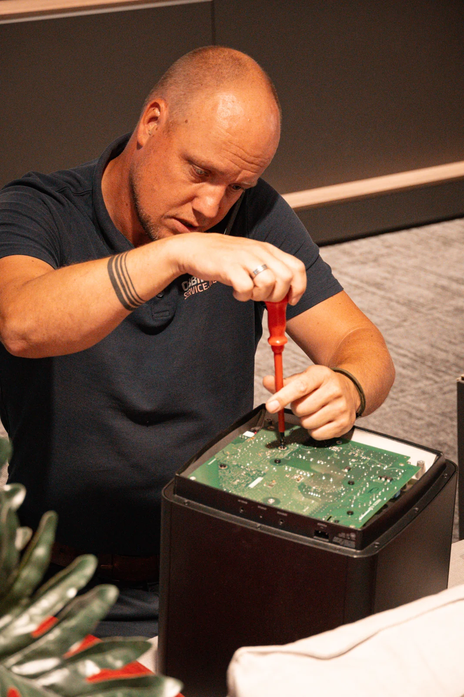
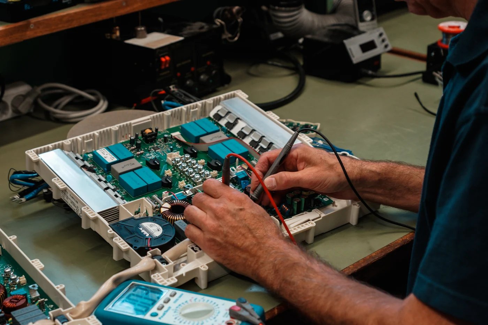
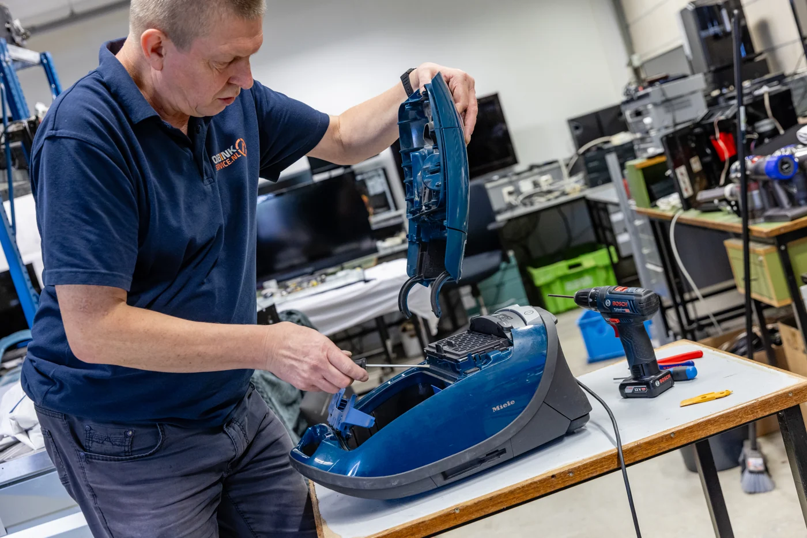
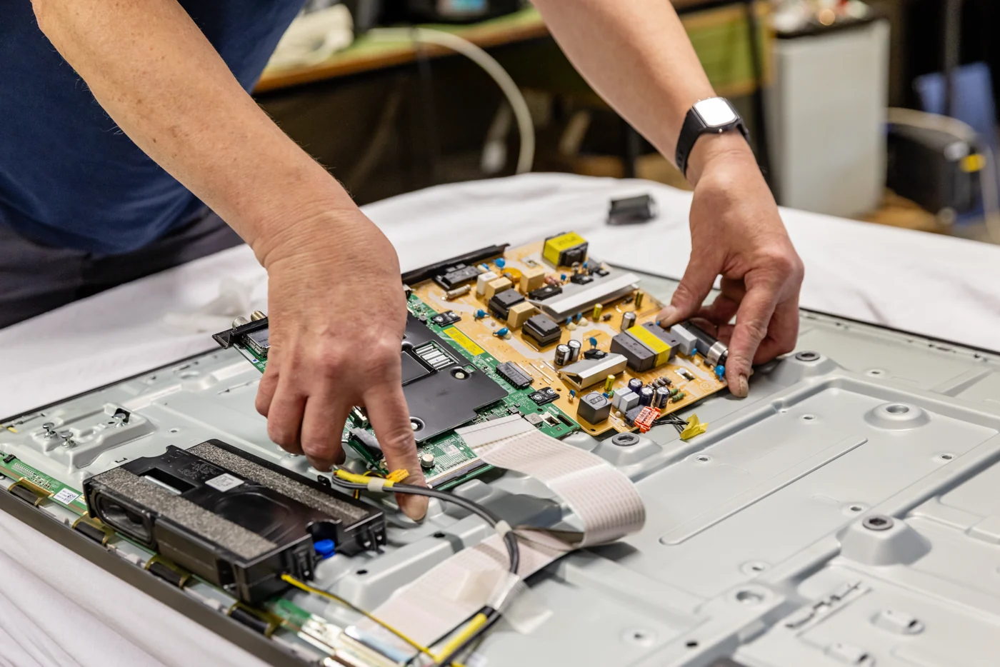
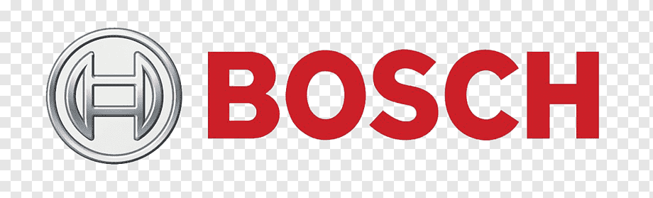
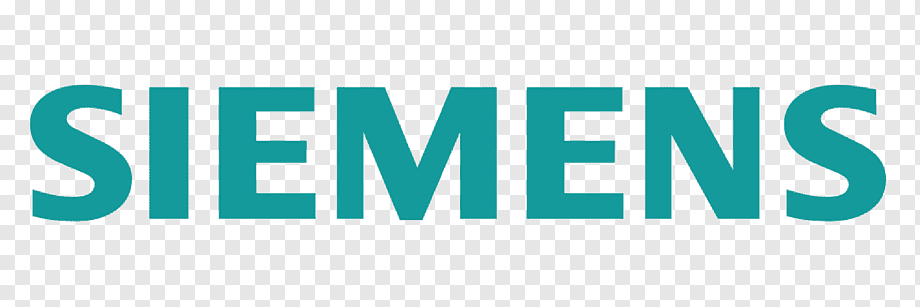
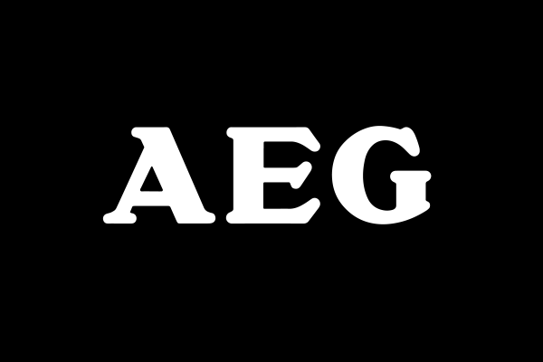
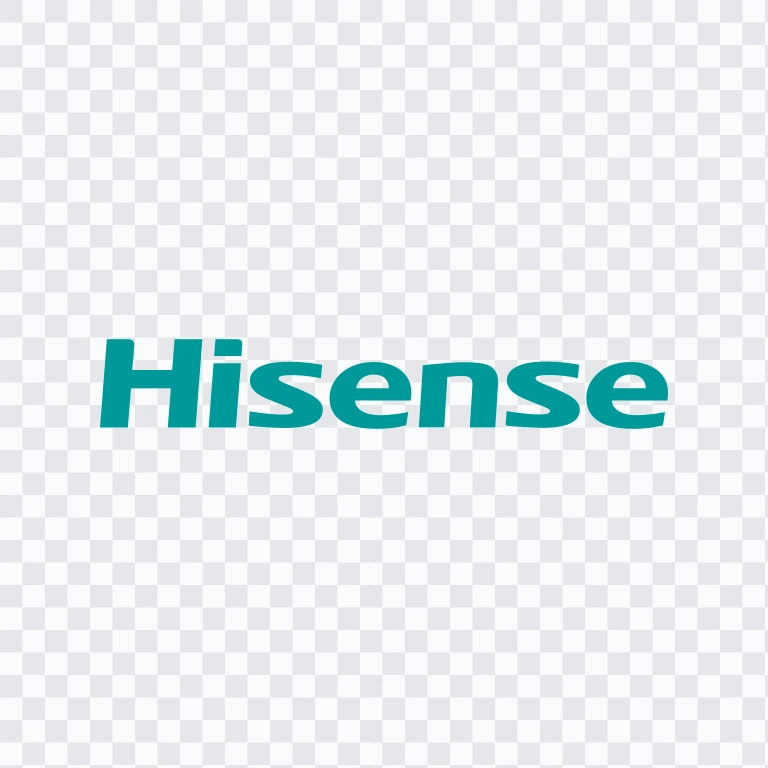

REPARATIE & TECHNIEK
Reparatie van bonenmachines, stofzuigers & elektronica
Niet ieder defect apparaat hoeft vervangen te worden. Obbink Service onderzoekt wat er aan de hand is en kijkt eerst of reparatie technisch en economisch verstandig is. Van stofzuiger en keukenapparaat tot bonenmachine en audioapparatuur.




SERVICE VOOR BIJNA ALLES MET EEN STEKKER
Obbink Service repareert, onderhoudt en onderzoekt een breed assortiment elektrische apparaten en elektronica. Van stofzuigers en bonenmachines tot televisies, audio, computers, laptops, witgoed en inbouwapparatuur. Onze eigen technische organisatie onderzoekt de storing, beoordeelt de reparatiemogelijkheden en kijkt of herstel technisch en economisch verantwoord is.
Kies hieronder uw apparaatcategorie voor meer informatie over onze reparatie- en servicemogelijkheden.
Staat uw apparaat er niet tussen?
Onze technische service is breder dan deze zes categorieën. Neem contact met ons op en stuur indien mogelijk merk, type en een korte omschrijving van de storing mee.
Vraag het onsGARANTIE & AUTORISATIE
Geautoriseerde reparatie, waar dat voor merk en product geldt.
Obbink Service is voor verschillende fabrikanten geautoriseerd om reparaties uit te voeren. Daardoor kunnen we bij geselecteerde merken en productcategorieën ook service binnen de fabrieksgarantie verzorgen. Of een reparatie onder garantie valt, hangt altijd af van merk, product, aankoopdatum en garantievoorwaarden.
Waar wij voor het betreffende merk en product geautoriseerd zijn, kunnen we de garantieprocedure volgens de fabrikant uitvoeren.
Ook buiten garantie beoordelen we eerst of repareren technisch en economisch verstandig is.
Merk, typenummer, serienummer en een duidelijke omschrijving van de klacht helpen ons om sneller de juiste route te bepalen.
Geautoriseerd voor onder meer




Autorisatie kan verschillen per merk, productcategorie en garantievoorwaarde.
ZO WERKT HET
Van storing naar een duidelijke vervolgstap.
Een goede reparatie begint met informatie. Hoe beter we weten welk apparaat u heeft en wat de klacht is, hoe gerichter we de service kunnen voorbereiden.
Vermeld merk, type en wat het apparaat wel of niet meer doet. Voeg indien mogelijk een foto van het typeplaatje toe.
We bekijken welke technische informatie nodig is en of het om garantie, reparatie of verdere diagnose gaat.
Als reparatie passend is, zetten we de volgende stap. Is vervangen verstandiger, dan geven we daar duidelijkheid over.
SINDS 1934
Service zit al generaties in Obbink.
Obbink begon in 1934 met techniek en service. Die gedachte is nog steeds actueel: een apparaat verkopen is één ding, begrijpen hoe het werkt en wat er mis kan gaan is iets anders. Obbink Service houdt die technische kennis in eigen huis.
We kijken naar de technische staat, de aard van de storing en wat economisch verantwoord is. Zo krijgt u eerst een onderbouwde reparatieroute in plaats van automatisch een nieuw apparaat.